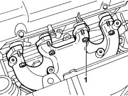
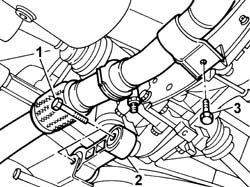
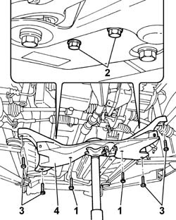

4410D13 front suspension beam - r r
- Path
- Procedures > 44 SUSPENSION AND WHEELS > 4410 FRONT SUSPENSION > 4410D frame and cross beam > 4410D13 front suspension beam - r r
- Kind
- repair procedure (removal / refitting; the operation number is the code)
- Applies to
- all engines; all production periods
- Interactive page
- https://sloeber94.github.io/elrnDB-fPnd/en/#/2752805
Applies to: all engines; all production periods
 Removing
Removing
 Refitting
RefittingPlace the car on a ramp.
4450B12 front or rear wheels (two) - r+r
1048A10 air cleaner filtering element - replace
1072C44 exhaust manifold heat shield on bulkhead - r+r
1. Undo the nuts securing the exhaust manifold to the cylinder head.
Move the exhaust manifold away from the cylinder head until it is released from the studs on the cylinder head.

Applies to: all engines; all production periods
1. Undo the bolts fixing the lower engine reaction rod.
2. Remove the lower engine reaction rod.
3. Undo the bolt fixing the mounting bracket for the first section of the exhaust pipe.
Lower the first section of the exhaust pipe.

Applies to: all engines; all production periods
1. Undo the bolts securing the steering box to the crossmember.
2. Undo the bolts fixing the U-bolts securing the anti-roll bar to the suspension crossmember.
Position a hydraulic jack underneath the suspension crossmember.
3. Undo the bolts fixing the crossmember to the bodyshell.
4. Remove the suspension crossmember.

Applies to: all engines; all production periods
Refitting
RemovingPosition the suspension crossmember on a hydraulic jack.
Raise the hydraulic jack and place the crossmember near the mountings on the bodyshell.
Tighten the bolts fixing the crossmember to the bodyshell to the recommended torque.
 | Fastening | Component | Ø | Value (daNm) |
|---|---|---|---|---|
- | Bolt | FRONT SUSPENSION SUBFRAME | M12 x 1.25 | 8 |
Remove the hydraulic jack.
Tighten the bolts securing the the steering box to the suspension cross member to the recommended torque.
| Fastening | Component | Ø | Value (daNm) |
|---|---|---|---|---|
- | Bolt | POWER UNIT BOTTOM REACTION ROD | M12 x 1.25 | (Crossmember side) 8 |
Tighten the bolts for the left and right U-bolts fixing the anti-roll bar to the crossmember to torque.
| Fastening | Component | Ø | Value (daNm) |
|---|---|---|---|---|
- | Bolt | FRONT ANTI-ROLL BAR | M8 | (Crossmember) 2.3 |
Fit the lower reaction rod and tighten the bolts fixing it to the crossmember and to the gearbox to torque.
| Fastening | Component | Ø | Value (daNm) |
|---|---|---|---|---|
- | Bolt | POWER UNIT BOTTOM REACTION ROD | M12 x 1.25 | (Crossmember side) 8 |
| Fastening | Component | Ø | Value (daNm) |
|---|---|---|---|---|
- | Bolt | POWER UNIT BOTTOM REACTION ROD | M12 x 1.25 | (Gearbox side) 8 |
Place the exhaust manifold in position on the cylinder head, then tighten the fixing nuts to torque.
| Fastening | Component | Ø | Value (daNm) |
|---|---|---|---|---|
- | Nut | EXHAUST MANIFOLD/S | M8 x 1.25 | 2.5 |
Tighten the bolt fixing the mounting bracket for the first section of the exhaust pipe to torque.
1072C44 exhaust manifold heat shield on bulkhead - r+r
1048A10 air cleaner filtering element - replace
4450B12 front or rear wheels (two) - r+r
Remove the vehicle from the ramp.